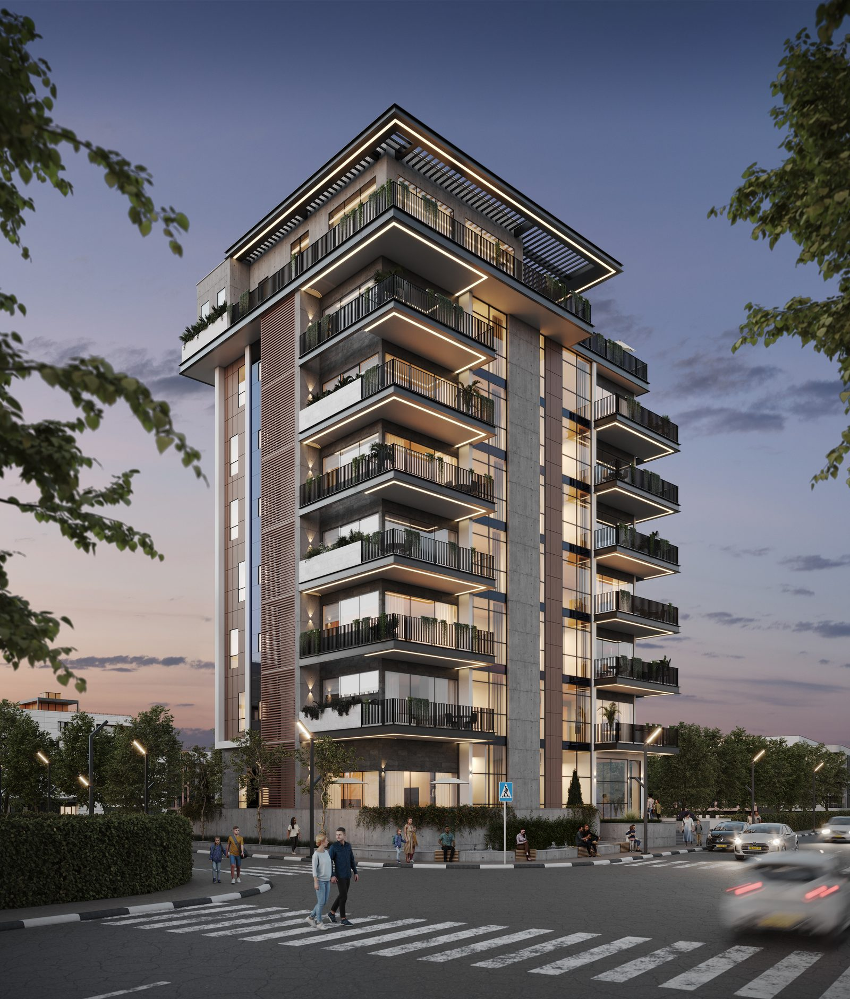
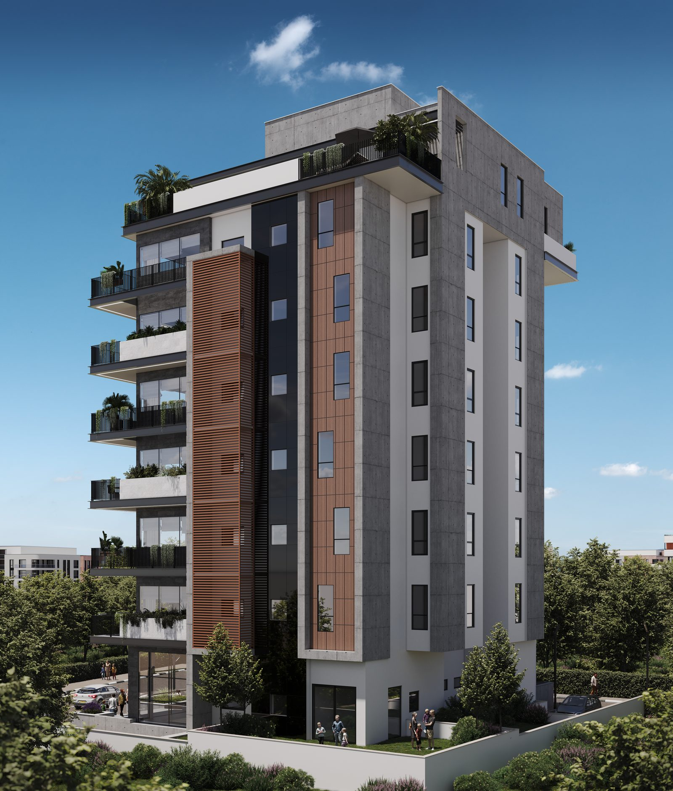

פרויקט דגל · בתכנון
הר אביטל.
מגדל מגורים בוטיק על קו החוף — חזית בטון חשוף אלגנטית, תשע קומות, ושפה אדריכלית שמדגישה את ההבדל בבית.
מגדל מגורים בוטיק על קו החוף — חזית בטון חשוף אלגנטית, תשע קומות, ושפה אדריכלית שמדגישה את ההבדל בבית.
הר אביטל הוא ההצהרה האדריכלית של שלי גרופ: מגדל בוטיק בן תשע קומות על קו החוף, שמוותר על הרעש ובוחר בנוכחות. חזית בטון חשוף אלגנטית, מרפסות מרחפות בקווים נקיים, ופרופורציות שנלקחו מעולם המלונאות — פרויקט שנבנה עבור מי שמחפש בית, לא רק דירה.
פרויקט מגורים על קו המים — נוף פתוח לים
מגדל בוטיק בקנה מידה אנושי — מעט דירות, הרבה פרטיות
חזית אדריכלית ייחודית בשפה עכשווית
הפרויקט בשלבי תכנון — הירשמו לעדכונים
בכל תקופה יש פרויקט אחד שמגדיר את החברה. עבור שלי גרופ, הר אביטל הוא הפרויקט הזה: המקום שבו הניסיון של שלושה עשורים בבנייה פוגש שאיפה אדריכלית בלתי מתפשרת. כל פרט — מגרעין הבטון החשוף ועד מעקות הזכוכית — תוכנן כחלק משפה אחת שלמה.
קנה המידה הוא חלק מהרעיון: תשע קומות בלבד, מספר מצומצם של דירות, ותחושה של בית פרטי בגובה. מי שגר במגדל בוטיק יודע את ההבדל — לובי שקט במקום המולה, שכנים שמכירים זה את זה, ומעלית שלא עוצרת בעשרים קומות.
התכנון הפנימי ממשיך את אותה תפיסה: דירות עם חזית רחבה אל הים, כך שהאור והנוף מגיעים לעומק חלל המגורים; מרפסות בעומק אמיתי, שמתפקדות כחדר נוסף רוב חודשי השנה; וגמישות תכנונית לרוכשים המצטרפים מוקדם, לפני שהשלד קובע את העובדות.
כמו בכל פרויקט של שלי גרופ, גם כאן היזם הוא הקבלן המבצע — ברישיון ג'5, הסיווג הגבוה בפנקס הקבלנים. בפרויקט ששואף לרמת גימור יוצאת דופן, זו לא נקודה טכנית: זו הערובה לכך שהחזון האדריכלי יגיע אל הבניין הבנוי בלי לאבד דבר בדרך.
כל התמונות הן הדמיות אדריכליות להמחשה בלבד ואינן מהוות מצג מחייב.


הר אביטל מתוכנן על קו החוף — מיקום שבו הנוף אינו תוספת אלא חלק מהתכנון: חזית הדירות נפתחת אל הים, והמרפסות המרחפות תוכננו כהמשך ישיר של חלל המגורים.
פרטי המיקום המלאים יפורסמו עם התקדמות הרישוי. הירשמו לעדכונים כדי להיות הראשונים לדעת.
הר אביטל בשלבי תכנון. השאירו פרטים והצטרפו לרשימת העדכונים — נשתף אתכם בהתקדמות ולפני פתיחת המכירה.